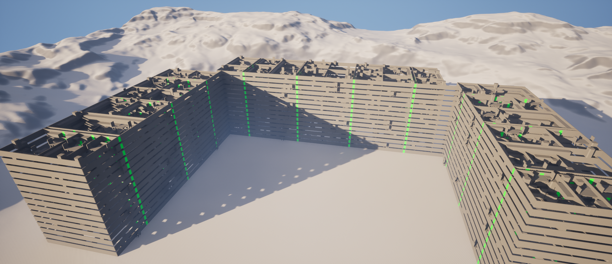
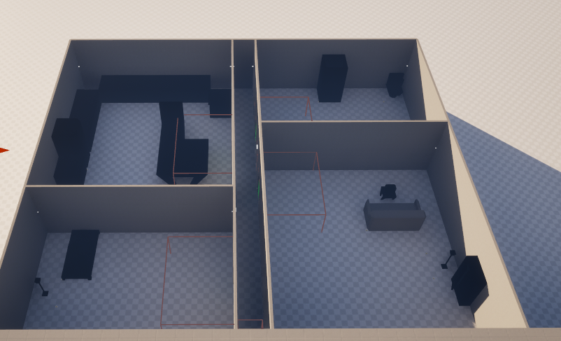
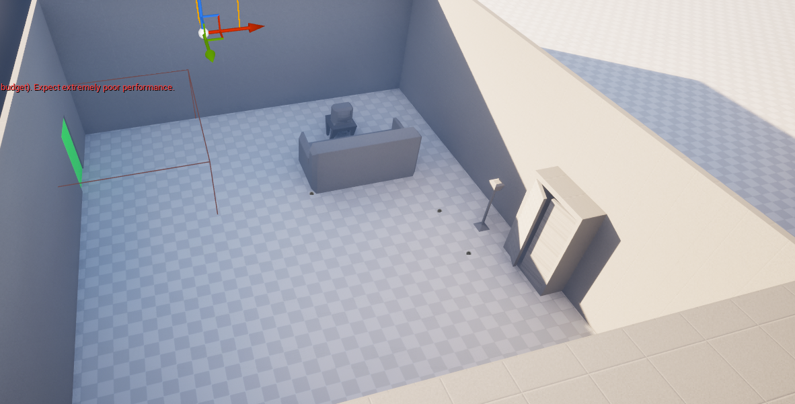
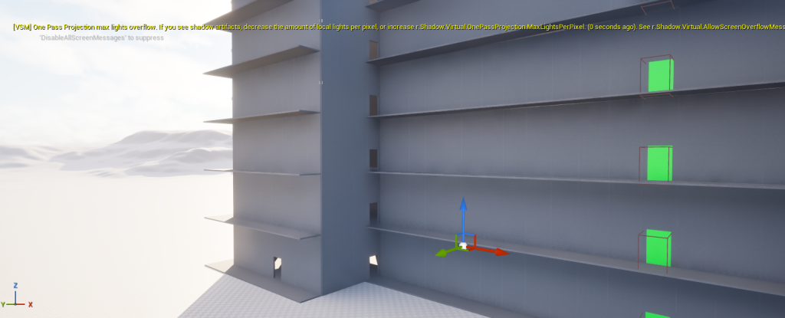

Procedural Council Flat Generator


This project was an Unreal Engine Council Flat Generator tool where you can generate a wide building along a spline object and have each room in the flat have a randomised layout.
Key Features
- Exterior Generation: One spline can spawn a set of walls and then place a door periodically. At each corner, an elevator shaft is placed.
- Interior Generation: Each door generates the blank whole room then it is divided into 4 rooms and a corridor. Each room is assigned as either bathroom, kitchen, living room, or bedroom depending on generated size. Within each room, the different room types have different objects to spawn and patterns for object combinations and rotations.
- GUI: To top off the project, I added a UI which lets the user choose how many floors are in the building.

